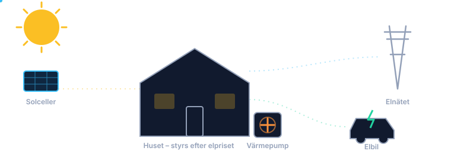

Vilken växelriktare fungerar?

EnergyWizard skriver ingen egen protokollkod för växelriktare. Vi går via den Home Assistant-integration som redan finns för ditt märke. Produktionen läses alltid in om integrationen har en effektsensor. Det som skiljer märkena åt är om exporten kan strypas vid minuspris, och det kräver att integrationen har en skrivbar gräns.
Märke för märke
| Märke | Integration | Exportstyrning | Status |
|---|---|---|---|
| SolarEdge | SolarEdge Modbus (officiell, HA 2026.10+) | ja, "Active power limit" (%) | körs i skarp drift (äldre integration) |
| Growatt / Solax (med batteri) | Solax Modbus | batteristyrning förifylld av entitetsväljaren | overifierat |
| FoxESS (med batteri) | nathanmarlor/foxess_modbus | batteristyrning förifylld av entitetsväljaren | overifierat |
| Felicity Solar T-REX (med batteri) | partach/ha_felicity | nej, integrationens egen styrning sköter batteriet; EnergyWizard läser | overifierat |
| Growatt | 0xAHA/Growatt_ModbusTCP | ja, "Export Limit Power" (%) | overifierat |
| Sungrow SH-RT/RS | mkaiser Modbus-paket | ja, "Export power limit" (W) + lägesbrytare | overifierat |
| Huawei SUN2000 | wlcrs/huawei_solar | ja, via integrationens tjänster (gräns mot nätet i %) | overifierat |
| Fronius GEN24/Symo | HA:s inbyggda Modbus | ja, register WMaxLimPct/WMaxLim_Ena | overifierat, registren omdiskuterade |
| Ferroamp EnergyHub | lokal Modbus TCP, ferroamp_modbus |
ja, nätets exportgräns i W med återläsning; batteriets laddning/urladdning separat | overifierat, kräver aktivt val i YAML |
| Övriga (Solis, GoodWe, Deye m.fl.) | märkets HA-integration | om den har en gräns i % eller W | prova entitetsväljaren |
"Overifierat" betyder att drivrutinen är byggd mot integrationens egen källkod eller dokumentation och testad med simulerade anrop, men inte körd mot en riktig växelriktare än. Har du ett av märkena? Hör av dig, det är precis det vi behöver.
SolarEdge
Använd Home Assistants officiella integration SolarEdge Modbus. Den är lokal, ingen molnkoppling behövs, och den finns från HA 2026.10. Entitetsväljaren föreslår dess "Active power limit" (%) med den generiska drivrutinen. Den äldre, handbyggda SolarEdge-drivrutinen används bara om du redan har den äldre HACS-integrationens entiteter.
Exportgränsen skrivs sparsamt
Växelriktare sparar sådana inställningar i flashminne, som slits av täta skrivningar. SolarEdge-integrationens dokumentation varnar uttryckligen för det. EnergyWizard skriver därför direkt bara när strypningen börjar, slutar eller går till 0 %. Finjusteringar däremellan skrivs högst var femte minut, och bara när värdet ändras med minst 5 procentenheter.
Huawei
huawei_solar styr exportgränsen med tjänsterna
set_maximum_feed_grid_power_percent och
reset_maximum_feed_grid_power. Gränsen gäller matningen till nätet,
inte produktionen. Vid minuspris håller växelriktaren själv exporten på noll, medan
huset fortfarande får solel. Entitetsväljaren fyller i växelriktarens enhets-ID.
Har du en EMMA ska du använda dess enhets-ID i stället. Integrationen kopplar
då tjänsterna till EMMA:n. Huawei Fusion Hub fungerar bra som källa för
effektsensorn.
Growatt: använd den lokala integrationen, inte molnet
Home Assistants inbyggda Growatt-integration (growatt_server) hämtar data
från Growatts moln. Ägare har rapporterat att kontot då kan låsas i ungefär ett dygn vid
för många anrop. EnergyWizard skickar inga egna anrop till Growatts moln, eftersom vi bara
läser det Home Assistant redan har. Molnintegrationen har ändå ingen exportgräns att styra.
Använd den lokala
Growatt_ModbusTCP via Modbus
TCP eller RS485. Den går inte via molnet. Vissa modeller (WIT) tar bara emot en
skrivning var 30:e sekund. EnergyWizard skriver exportgränsen högst en gång i minuten,
och bara när den ändras.
Sungrow
Med mkaisers Modbus-paket är gränsen i watt. EnergyWizard räknar om procent till
watt mot gränsens eget maxvärde, eller mot export_limit_max_w om du
anger det. Lägesbrytaren "Export power limit" slås på när vi stryper och av igen
efteråt. GoSungrow/iSolarCloud går via molnet och har ingen sådan gräns vi kan
använda.
Fronius
Varken den officiella Fronius-integrationen eller fronius_modbus har
en skrivbar produktionsgräns. Därför skriver EnergyWizard registren via HA:s egen
tjänst modbus.write_register: gräns av, nytt procentvärde, gräns på.
Du behöver en Modbus-hubb
i configuration.yaml, och Modbus TCP påslaget i växelriktaren.
Förvalet använder 40232/40236 från HA-communityns tråd. Uppgifterna där går isär
för viss firmware, men adresserna går att ändra i house_config.yaml.
Ferroamp EnergyHub
Drivrutinen ferroamp_modbus läser batteri och sol direkt via Modbus TCP.
Exportgränsen gäller hela systemets nätutmatning, inte bara solproduktionen. Styrning är
av som standard. Batteristyrning kräver dessutom att standardlägets återgång har verifierats
på den egna firmware-versionen; håll och vila saknar verifierad motsvarighet.
Se kontrollmappning och konfiguration.
Exempel för varje märke finns i config/house_config.example.yaml.